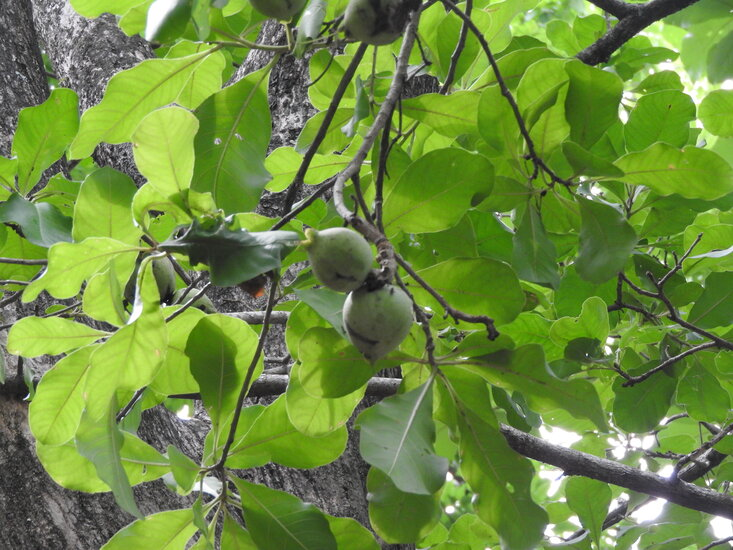

Overview
Kumbhi tree – Careya arborea is an Ayurvedic herb used for the treatment of ulcer, cough, eruptions in the skin, wound and promotes digestion. Ceylon Oak, Kumbhika, Katabhi, Wild Guava are synonyms.
Botanical Name
Careya arborea Roxb.
Family
Barringtoniaceae
Uses of Kumbhi Tree
- The decoction prepared from the bark of Kumbhika is given in a dose of 30 – 40 ml in conditions of snake bite poisoning and scorpion bite.
- Cold infusion of the bark of Careya arborea is given in a dose of 30 – 40 ml to treat cough and fever.
- The powder of the bark of the tree is sprinkled over the wounds for quick healing.
Properties, Part Used, Dosage
Medicinal properties of Ceylon Oak:
- Rasa (Taste): Katu (Pungent)
- Guna (Qualities): Laghu (Light), Ruksha (Dry)
- Vipaka: Katu (Undergoes pungent taste after digestion)
- Veerya: Ushna (Hot)
- Karma (Actions): Kaphahara (reduces vitiated kapha dosha)
Part used: Bark, Fruit, Flower
Dosage:
- Decoction – 30 to 40 ml
- Powder – 3 to 5 g
Chemical Composition of Careya abrorea
The bark of the plant contains lupeol, B – sitosterol, Betulin. Leaves contain triterpenoid, lactone, careyagenolide, malinic acid, 2 – hydroxyl ursolic acid and tannin. The fruit contains gum. The seeds contain alpha – spia sterol, alpha – spina sterone, sapogenol careyagenol.
Traditional Description of Wild Guava
Indicated in:
- Nadi – sinuses
- Vrana – Ulcers, wounds
- Prameha – Urinary tract disorders, diabetes
- Arsha – haemorrhoids
- Krumi – worm infestation
- Kapharoga – diseases of Kapha imbalance
- Kushta – skin diseases
- Shoola – abdominal colic pain
- Ruja – pain
- Ajeerna – indigestion
Fruit is
- Tuvara – astringent
- Decreases Kapha
- Decreases Shukra – semen, sperm